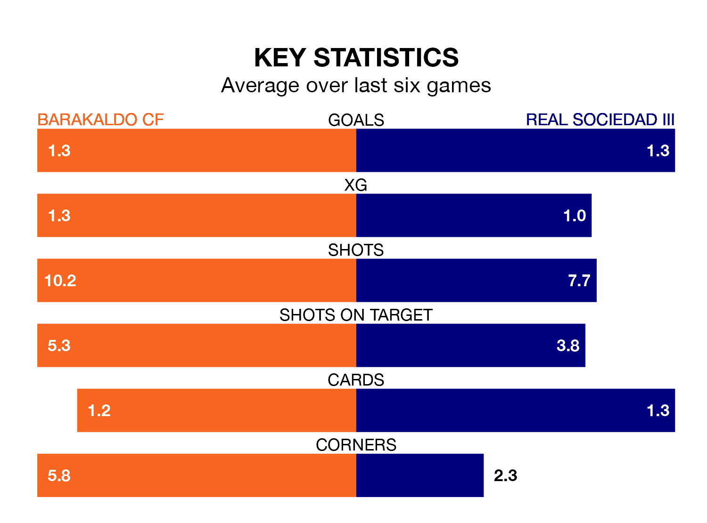

Barakaldo CF are heavy favourites to keep all three points at home in Sunday's late kick-off against Real Sociedad III.
Barakaldo, who sit second in the Segunda División RFEF Group 2 with 23 games played, are priced at 1.3 to seal victory at the Estadio Nuevo Lasesarre.
Sitting five places and 14 points behind them in the table, Sociedad III are 9.1 to win with *Betting Company*, while the draw is at 3.9.
With 35 goals in 23 games so far this season, Barakaldo are scoring more than average in the league with 1.5 goals per game. And they are conceding fewer than average, letting in 14 goals at a rate of 0.6 per game.
Sociedad III, meanwhile, are average scorers, with 1.1 goals per game. They have conceded 0.9 goals per game.
The home side are in reasonable form in the Segunda División RFEF Group 2, with three wins and three draws from their last six games.
With a win and four draws over that period, the visitors' form is worse – they have taken seven points from 18, compared to Barakaldo's 12.
Barakaldo's last match was on February 18, a 0-0 draw against Náxara CD.
Sociedad III drew 2-2 with Arenas de Getxo last time out, also on February 18, with Eñaut Lete Larrañaga and Manex Gibelalde Mujika on the scoresheet.
Updated: 10:08 (UTC), 23/02/24